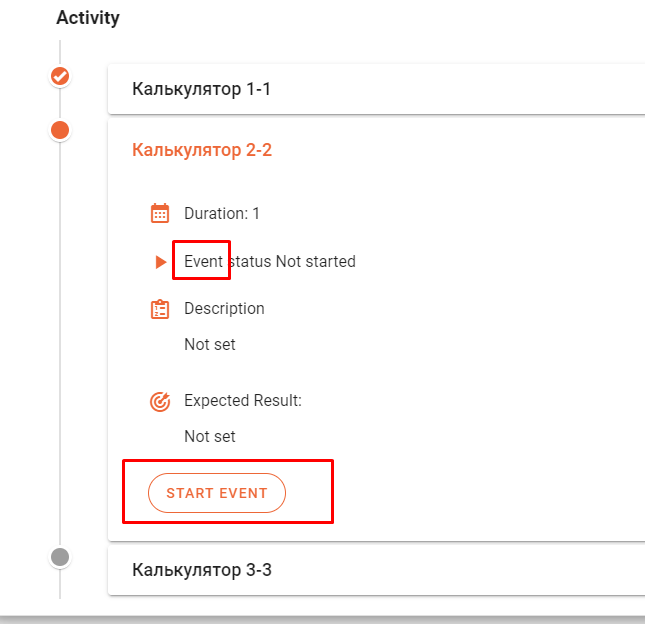

<div style="width: 50%; margin-left: 25%">
  <mat-card
    *ngFor="let blogEntry of (dataSource | async)?.items"
    style="margin-top: 15px"
  >
    <div style="display: flex">
      <div>
        

        <ng-template #placeholderImage>
          
        </ng-template>
      </div>

      <div style="margin-left: 30px">
        <h2>
          {{ blogEntry.title }}
        </h2>

        <p>{{ blogEntry.description }}</p>

        <small>Author: {{ blogEntry.author?.name }}</small>
      </div>
    </div>
  </mat-card>

  <mat-paginator
    [length]="(dataSource | async)?.meta?.totalItems"
    [pageSize]="(dataSource | async)?.meta?.itemsPerPage"
    [pageSizeOptions]="[1, 5, 10, 25]"
    (page)="pageEvent = $event; onPaginateChange($event)"
    showFirstLastButtons
  ></mat-paginator>
</div>
